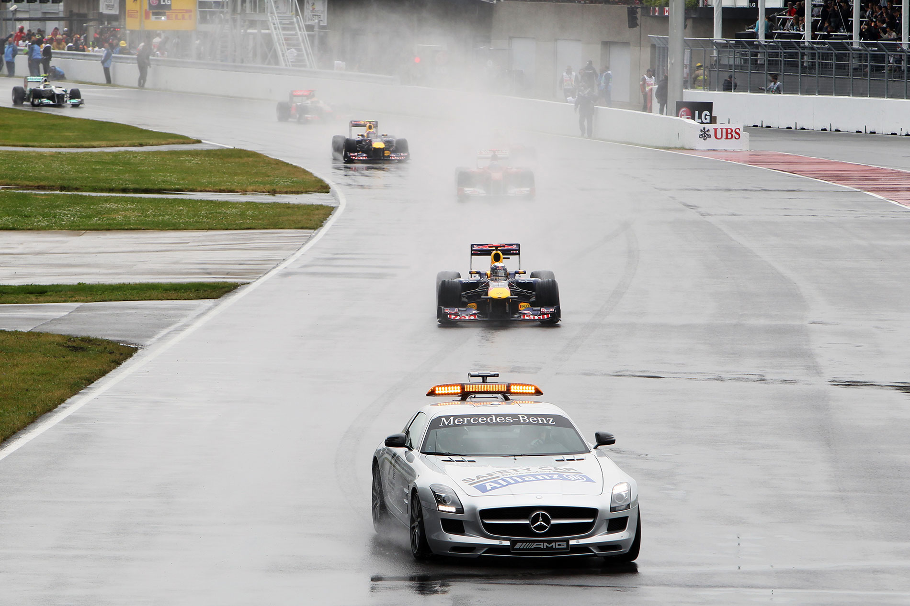

Com reação antológica, Button supera Vettel no fim, em corrida que ficou duas horas parada por causa da chuva, inglês ganha após duas batidas e seis paradas nos boxes.
Fonte: http://www.globo.com
Faça chuva ou faça sol, Sebastian Vettel vinha dominando a Fórmula 1. E parecia pronto para ampliar o domínio no GP do Canadá, que teve chuva – a ponto de interromper a corrida por duas horas – e sol, numa aparição tímida após a relargada. O alemão da RBR controlou a prova do início até última volta, quando enfim, apareceu alguém para beliscar seu reinado. Com uma reação antológica, o inglês Jenson Button ultrapassou Vettel nos instantes finais e arrancou uma vitória improvável ao conduzir sua McLaren após duas batidas e seis passagens pelos boxes, incluindo uma punição. Quatro horas depois da largada, ninguém imaginava que o desfecho seria aquele. Mas Button teve um domingo para derrubar todos os prognósticos. Como se não bastasse, o britânico ainda precisou torcer contra mais uma reviravolta, já que a direção da prova julgou dois incidentes que ele teve na corrida, um com Lewis Hamilton e outro com Fernando Alonso – os dois abandonaram. Quase duas horas depois da corrida, veio a decisão que aliviou o inglês: sem punição, vitória mantida. Um decepcionado Vettel chegou em segundo, seguido pelo companheiro Mark Webber e pelo alemão Michael Schumacher, da Mercedes. Vitaly Petrov, da Renault, foi o quinto, e Felipe Massa também tirou um feito da cartola no último instante da corrida. Após escorregar 10 posições por causa de uma parada não prevista nos boxes, o piloto da Ferrari arrancou a sexta posição quase em cima da linha de chegada, ao ultrapassar o japonês Kamui Kobayashi, da Sauber. Rubens Barrichello, da Williams, chegou em nono, na prova caótica que viu seis abandonos, incluindo Fernando Alonso, da Ferrari, e Lewis Hamilton, da McLaren. Após a batalha de Montreal, os pilotos folgam no próximo fim de semana e voltam à pista no dia 26 deste mês, para o GP da Europa, em Valência, na Espanha. Apesar do tropeço, Sebastian Vettel ainda é o líder isolado do campeonato, com 161 pontos. A vitória fez Button assumir o segundo lugar, com 101, seguido pelos 94 de Webber. Massa é o sexto da temporada, com 32.

A chuva canadense forçou uma largada sem jeito de largada, com o safety car puxando a fila. Na quarta volta, aí sim, o carro de segurança saiu de cena e a disputa começou de verdade. Alonso pressionou o pole Vettel, Massa pressionou Alonso, mas todo mundo se defendeu bem.
Hamilton abriu ali a montanha-russa dos seus dez minutos de corrida. Primeiro tentou forçar para cima de Webber, mas sua roda dianteira direita tocou o carro do australiano, que rodou e perdeu dez lugares na fila, caindo para 14º. O inglês caiu para sexto, atrás de Nico Rosberg e Schumacher. Afoito, tentou dar o bote no heptacampeão, mas levou um passa-fora, saiu da pista e perdeu posições. Pouco depois, na oitava volta, Lewis tentou forçar de novo, desta vez tocando o companheiro Button. Era só o primeiro percalço de Button, que caiu para 12º, mas quem se deu mal mesmo foi Hamilton, que bateu no muro e quebrou a suspensão traseira. Com a roda quase solta, continuou na pista, só por mais alguns segundos, até parar e abandonar o GP.
Com o incidente, lá foi o safety car de novo para a pista, e àquela altura a chuva até que dava uma trégua. Quando a disputa recomeçou, Button era o mais rápido, tão rápido que, antes da saída do safety car, excedeu a velocidade e, punido, foi obrigado a passar pelos boxes. Ainda assim, ele começou a deixar adversários para trás. Webber também subia pelas tabelas e, com as paradas nos boxes, voltou à quarta posição. Na 19ª volta, a água voltou com força. Melhor para Vettel, Massa, Kobayashi e Webber, que não tinham trocado os pneus de chuva. Seus rivais foram obrigados a parar de novo, e o mau tempo foi buscar outra vez o safety car.
As paradas continuavam mexendo na fila, com Alonso tendo problemas e caindo para oitavo. Massa perdeu a segunda posição para Kobayashi – que manteve os pneus intermediários – e Vettel voltou em primeiro. E voltou reclamando. Pelo rádio, cobrou que não houvesse relargada naquele momento, por causa da aquaplanagem entre as curvas 9 e 13. Ele tinha razão, porque, na 25ª volta, a chuva venceu. Bandeira vermelha, e todos os carros pararam no grid para esperar as condições melhorarem. Vettel liderava, seguido por Kobayashi, Massa, Heidfeld, Petrov, Di
Durante uma hora e meia, a água castigou o circuito Gilles Villeneuve. Com os carros cobertos no grid, a organização mandou máquinas à pista para lutar contra enormes poças. Já eram 16h12m (no horário de Brasília) quando a chuva, enfim, parou. O céu ficou mais claro, as lonas começaram a ser retiradas e alguns motores foram ligados, enquanto o carro da direção de prova dava suas voltas para inspecionar as condições. Outra meia hora se passou e, quando foi anunciada a relargada para as 16h50m… outra pancada de chuva. Mas a corrida recomeçou mesmo assim, com o safety car à frente. Enquanto os carros iam levantando spray, a torcida nas arquibancadas vibrava. Na sétima volta após o recomeço, até o sol deu uma espiada rápida na corrida. Foi quando o safety car voltou aos boxes na volta 34, e a disputa recomeçou. Vettel conseguiu abrir um certo conforto, e Massa deu o bote em Kobayashi. Chegou a ultrapassá-lo, mas o japonês deu o troco imediatamente, mantendo a segunda posição. Na 37ª volta, logo após sair dos boxes, Alonso se chocou com Button ao se defender de uma tentativa de ultrapassagem e foi parar no muro. O espanhol abandonou, e o inglês, no seu calvário, teve de voltar aos boxes. Nem deu para sentir saudades do safety car, que voltou à pista e ali ficou por três voltas.
Na relargada, os três primeiros mantiveram seus postos, e a emoção ficou a cargo de Schumacher. Em sétimo lugar, ele passou Webber e, logo depois, Di Resta, que tocou Heidefeld e teve problemas no bico. Heidfeld fez o que pôde para segurar Schumi, mas não resistiu na 44ª volta. Dos boxes, a Ferrari pedia que Massa “tirasse Kobayashi do caminho” para perseguir Vettel, mas o japonês segurava a vice-liderança com unhas e dentes. Quando o brasileiro finalmente conseguia superar o japonês, na volta 52, veio uma manobra digna de heptacampeão: Schumacher aproveitou a disputa e ultrapassou os dois ao mesmo tempo, assumindo a segunda posição.
Massa e Schumi pararam logo em seguida, e o brasileiro deu azar. Com pneus slick, perdeu o controle na reta, bateu no guard rail e teve de voltar para trocar a asa dianteira. Com isso, escorregou para o 12º posto. Kobayashi também perdeu posições para Webber e Button, que àquela altura já fazia uma espetacular corrida de recuperação. Heidfeld, que estava em sexto, tocou Kobayashi à sua frente, quebrou a asa dianteira e bateu. A Renault agiu rápido, mas com a pista suja, não houve jeito: a 13 voltas do fim, o safety car voltou. Atrás dele, Vettel, Schumacher, Webber, Button, Kobayashi, Petrov e Barrichello. Na relargada, faltavam dez voltas.
O atual campeão conseguiu escapar bem na ponta, mas os três seguintes vinham colados. Webber chegou a passar Schumi, mas errou e permitiu não só o troco, mas a ultrapassagem de Button. Após seis paradas nos boxes, incluindo uma punição, o inglês foi para cima do alemão e não demorou nada para ultrapassá-lo. Webber também conseguiu deixar Schumi para trás e resistiu aos seus ataques, arrancando um pódio suado. Na última volta, a cereja no bolo da reação de Jenson Button. O inglês partiu para cima de Vettel, que, pressionado, cometeu um erro e viu a quinta vitória escorrer pelos dedos. Com uma ultrapassagem improvável, contra tudo e contra todos, Button cruzou em primeiro. Massa ainda teve tempo para perseguir Kobayashi e arrancar a sexta posição de forma dramática, quase em cima da linha de chegada. Com tantas reviravoltas na parte final, o Canadá já pode se orgulhar de ter visto neste domingo uma das melhores corridas de Fórmula 1 nos últimos tempos.